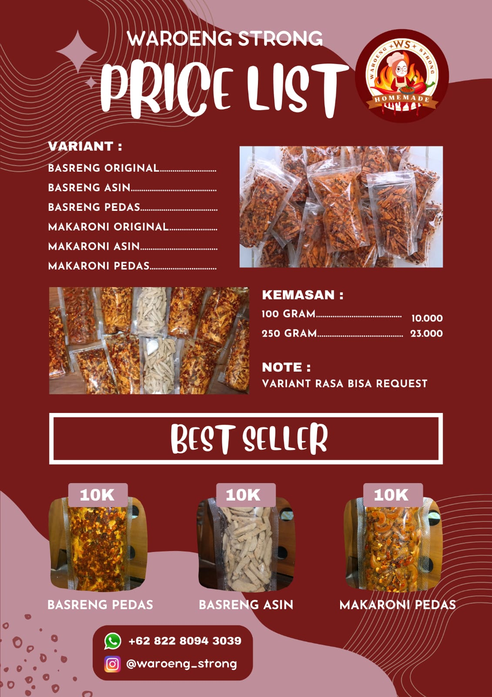
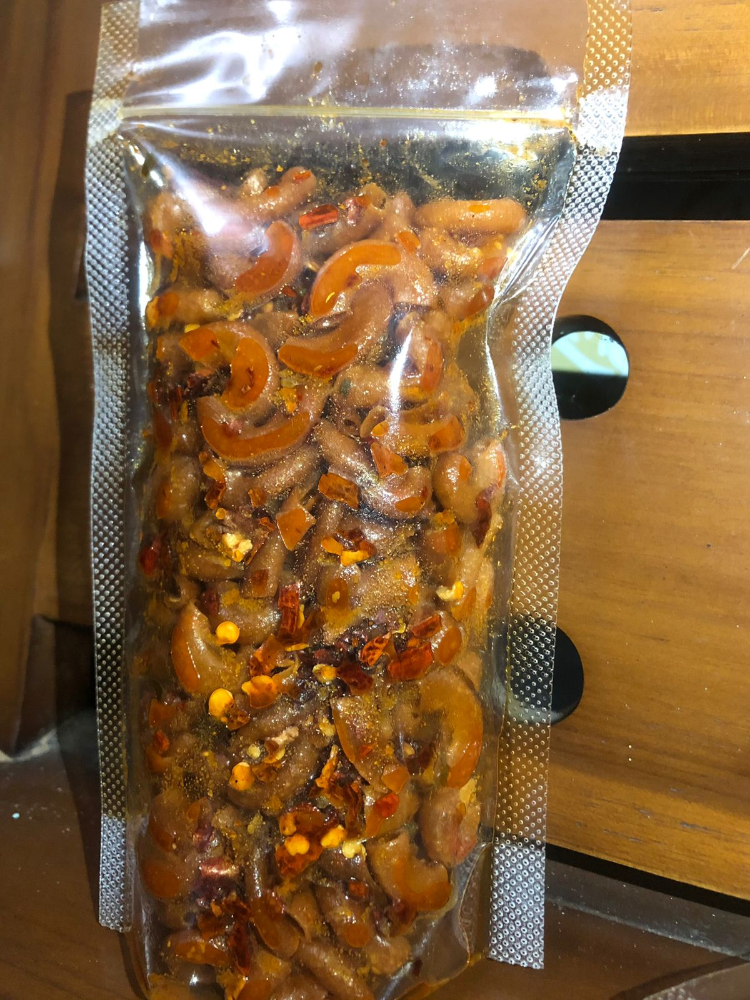

Cicipi kelezatan Basreng kami yang unik dan menggugah selera, dari Basreng Pedas yang menggigit, Basreng Asin yang gurih, hingga Makaroni Pedas yang menyala di lidah. Temukan sensasi baru dalam setiap gigitan dan nikmati pengalaman camilan yang tak terlupakan bersama kami!
Rasakan sensasi pedas yang memikat dan kelezatan gurih dalam setiap gigitan Basreng Pedas kami. Dibuat dengan rempah-rempah pilihan dan teknik penggorengan khusus, Basreng Pedas kami siap memanjakan lidah Anda dan memberikan pengalaman camilan yang tak terlupakan. Segera nikmati cita rasa yang menggugah selera hanya dengan Basreng Pedas kami!

Nikmati kenikmatan gurih yang memikat dari Basreng Asin kami yang krispy dan lezat. Dibuat dengan bumbu-bumbu pilihan dan proses penggorengan yang teliti, Basreng Asin kami menawarkan pengalaman camilan yang memuaskan dengan setiap gigitannya. Segera rasakan sensasi gurih yang tiada tara dengan Basreng Asin kami yang siap menggugah selera Anda!

Rasakan ledakan rasa pedas yang menggugah selera dengan Makaroni Pedas kami yang renyah dan memikat. Dibuat dengan bumbu pedas yang khas dan teknik penggorengan yang sempurna, setiap helai makaroni dipenuhi dengan cita rasa yang menggelora. Sajikan sebagai camilan istimewa untuk menambahkan kegembiraan pada setiap momen bersama keluarga dan teman-teman.
